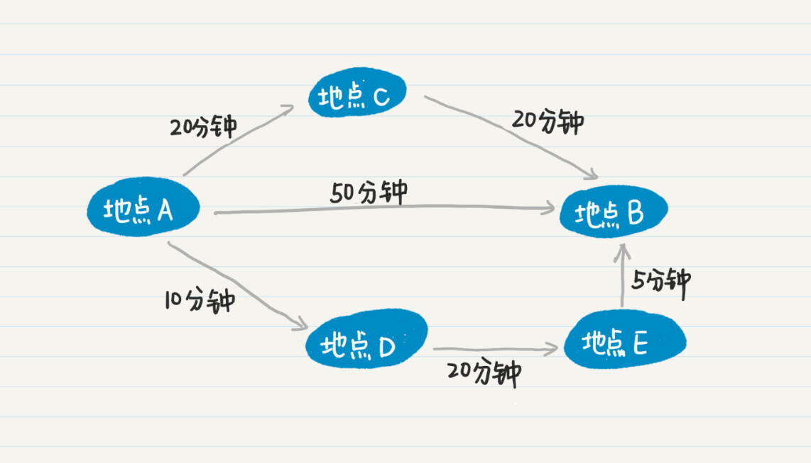
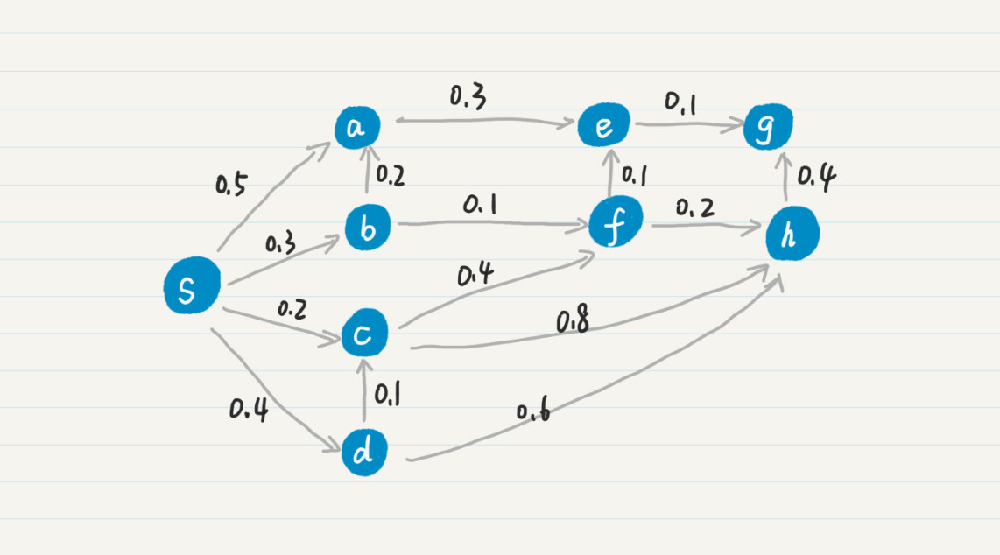
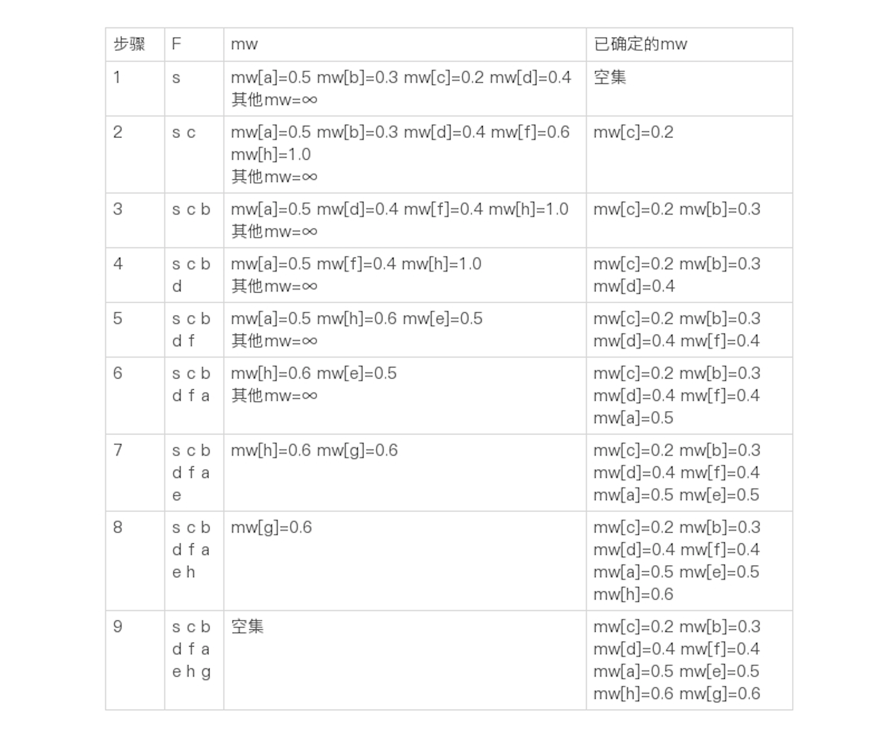
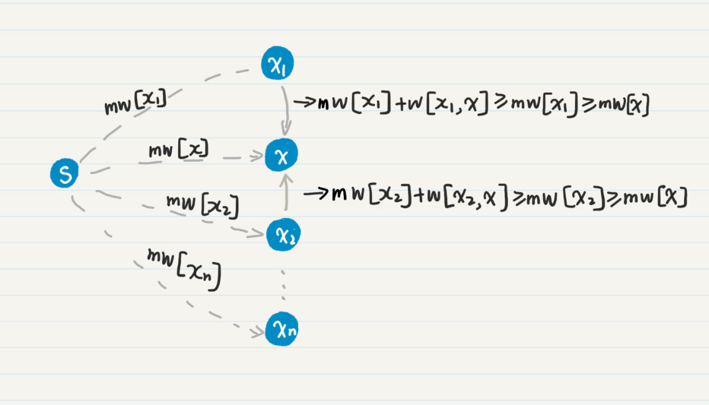
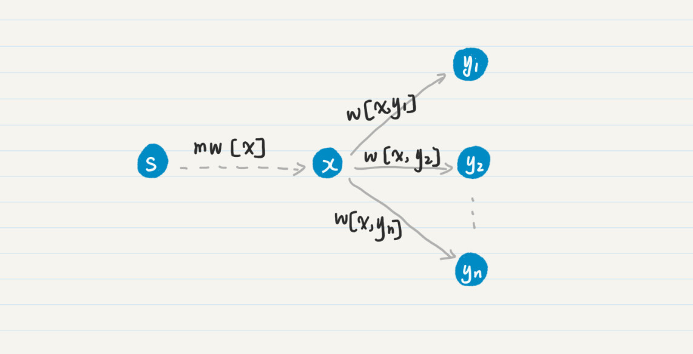
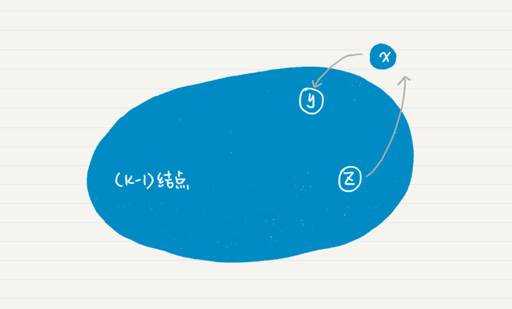

- 01 二进制：不了解计算机的源头，你学什么编程.md
- 02 余数：原来取余操作本身就是个哈希函数.md
- 03 迭代法：不用编程语言的自带函数，你会如何计算平方根？.md
- 04 数学归纳法：如何用数学归纳提升代码的运行效率？.md
- 05 递归（上）：泛化数学归纳，如何将复杂问题简单化？.md
- 06 递归（下）：分而治之，从归并排序到MapReduce.md
- 07 排列：如何让计算机学会“田忌赛马”？.md
- 08 组合：如何让计算机安排世界杯的赛程？.md
- 09 动态规划（上）：如何实现基于编辑距离的查询推荐？.md
- 10 动态规划（下）：如何求得状态转移方程并进行编程实现？.md
- 11 树的深度优先搜索（上）：如何才能高效率地查字典？.md
- 12 树的深度优先搜索（下）：如何才能高效率地查字典？.md
- 13 树的广度优先搜索（上）：人际关系的六度理论是真的吗？.md
- 14 树的广度优先搜索（下）：为什么双向广度优先搜索的效率更高？.md
- 15 从树到图：如何让计算机学会看地图？.md
- 16 时间和空间复杂度（上）：优化性能是否只是“纸上谈兵”？.md
- 17 时间和空间复杂度（下）：如何使用六个法则进行复杂度分析？.md
- 18 总结课：数据结构、编程语句和基础算法体现了哪些数学思想？.md
- 19 概率和统计：编程为什么需要概率和统计？.md
- 20 概率基础（上）：一篇文章帮你理解随机变量、概率分布和期望值.md
- 21 概率基础（下）：联合概率、条件概率和贝叶斯法则，这些概率公式究竟能做什么？.md
- 22 朴素贝叶斯：如何让计算机学会自动分类？.md
- 23 文本分类：如何区分特定类型的新闻？.md
- 24 语言模型：如何使用链式法则和马尔科夫假设简化概率模型？.md
- 25 马尔科夫模型：从PageRank到语音识别，背后是什么模型在支撑？.md
- 26 信息熵：如何通过几个问题，测出你对应的武侠人物？.md
- 27 决策树：信息增益、增益比率和基尼指数的运用.md
- 28 熵、信息增益和卡方：如何寻找关键特征？.md
- 29 归一化和标准化：各种特征如何综合才是最合理的？.md
- 30 统计意义（上）：如何通过显著性检验，判断你的A_B测试结果是不是巧合？.md
- 31 统计意义（下）：如何通过显著性检验，判断你的A_B测试结果是不是巧合？.md
- 32 概率统计篇答疑和总结：为什么会有欠拟合和过拟合？.md
- 33 线性代数：线性代数到底都讲了些什么？.md
- 34 向量空间模型：如何让计算机理解现实事物之间的关系？.md
- 35 文本检索：如何让计算机处理自然语言？.md
- 36 文本聚类：如何过滤冗余的新闻？.md
- 37 矩阵（上）：如何使用矩阵操作进行PageRank计算？.md
- 38 矩阵（下）：如何使用矩阵操作进行协同过滤推荐？.md
- 39 线性回归（上）：如何使用高斯消元求解线性方程组？.md
- 40 线性回归（中）：如何使用最小二乘法进行直线拟合？.md
- 41 线性回归（下）：如何使用最小二乘法进行效果验证？.md
- 42 PCA主成分分析（上）：如何利用协方差矩阵来降维？.md
- 43 PCA主成分分析（下）：为什么要计算协方差矩阵的特征值和特征向量？.md
- 44 奇异值分解：如何挖掘潜在的语义关系？.md
- 45 线性代数篇答疑和总结：矩阵乘法的几何意义是什么？.md
- 46 缓存系统：如何通过哈希表和队列实现高效访问？.md
- 47 搜索引擎（上）：如何通过倒排索引和向量空间模型，打造一个简单的搜索引擎？.md
- 48 搜索引擎（下）：如何通过查询的分类，让电商平台的搜索结果更相关？.md
- 49 推荐系统（上）：如何实现基于相似度的协同过滤？.md
- 50 推荐系统（下）：如何通过SVD分析用户和物品的矩阵？.md
- 51 综合应用篇答疑和总结：如何进行个性化用户画像的设计？.md
- 导读：程序员应该怎么学数学？.md
- 开篇词 作为程序员，为什么你应该学好数学？.md
- 数学专栏课外加餐（一） 我们为什么需要反码和补码？.md
- 数学专栏课外加餐（三）：程序员需要读哪些数学书？.md
- 数学专栏课外加餐（二） 位操作的三个应用实例.md
- 结束语 从数学到编程，本身就是一个很长的链条.md
15 从树到图：如何让计算机学会看地图？
你好，我是黄申。
我们经常使用手机上的地图导航App，查找出行的路线。那计算机是如何在多个选择中找到最优解呢？换句话说，计算机是如何挑选出最佳路线的呢？
前几节，我们讲了数学中非常重要的图论中的概念，图，尤其是树中的广度优先搜索。在广度优先的策略中，因为社交网络中的关系是双向的，所以我们直接用无向边来求解图中任意两点的最短通路。
这里，我们依旧可以用图来解决这个问题，但是，影响到达最终目的地的因素有很多，比如出行的交通工具、行驶的距离、每条道路的交通状况等等，因此，我们需要赋予到达目的地的每条边，不同的权重。而我们想求的最佳路线，其实就是各边权重之和最小的通路。
我们前面说了，广度优先搜索只测量通路的长度，而不考虑每条边上的权重。那么广度优先搜索就无法高效地完成这个任务了。那我们能否把它改造或者优化一下呢？
我们需要先把交通地图转为图的模型。图中的每个结点表示一个地点，每条边表示一条道路或者交通工具的路线。其中，边是有向的，表示单行道等情况；其次，边是有权重的。
假设你关心的是路上所花费的时间，那么权重就是从一点到另一点所花费的时间；如果你关心的是距离，那么权重就是两点之间的物理距离。这样，我们就把交通导航转换成图论中的一个问题：在边有权重的图中，如何让计算机查找最优通路？
基于广度优先或深度优先搜索的方法
我们以寻找耗时最短的路线为例来看看。
一旦我们把地图转换成了图的模型，就可以运用广度优先搜索，计算从某个出发点，到图中任意一个其他结点的总耗时。
基本思路是，从出发点开始，广度优先遍历每个点，当遍历到某个点的时候，如果该点还没有耗时的记录，记下当前这条通路的耗时。如果该点之前已经有耗时记录了，那就比较当前这条通路的耗时是不是比之前少。如果是，那就用当前的替换掉之前的记录。
实际上，地图导航和之前社交网络最大的不同在于，每个结点被访问了一次还是多次。在之前的社交网络的案例中，使用广度优先策略时，对每个结点的首次访问就能获得最短通路，因此每个结点只需要被访问一次，这也是为什么广度优先比深度优先更有效。
而在地图导航的案例中，从出发点到某个目的地结点，可能有不同的通路，也就意味着耗时不同。而耗时是通路上每条边的权重决定的，而不是通路的长度。因此，为了获取达到某个点的最短时间，我们必须遍历所有可能的路线，来取得最小值。这也就是说，我们对某些结点的访问可能有多次。
我画了一张图，方便你理解多条通路对最终结果的影响。这张图中有A、B、C、D、E五个结点，分别表示不同的地点。

从这个图中可以看出，从A点出发到目的地B点，一共有三条路线。
- 如果你直接从A点到B点，度数为1，需要50分钟。
- 从A点到C点再到B点，虽然度数为2，但总共只要40分钟。
- 从A点到D点，到E点，再到最后的B点，虽然度数为3，但是总耗时只有35分钟，比其他所有的路线更优。
这种情形之下，使用广度优先找到的最短通路，不一定是最优的路线。所以，对于在地图上查找最优路线的问题，无论是广度优先还是深度优先的策略，都需要遍历所有可能的路线，然后取最优的解。
在遍历所有可能的路线时，有几个问题需要注意。
第一，由于要遍历所有可能的通路，因此一个点可能会被访问多次。当然，这个“多次“是指某个结点出现在不同通路中，而不是多次出现在同一条通路中。因为我们不想让用户总是兜圈子，所以需要避免回路。
第二，如果某个结点x和起始点s之间存在多个通路，每当x到s之间的最优路线被更新之后，我们还需要更新所有和x相邻的结点之最优路线，计算复杂度会很高。
一个优化的版本：Dijkstra算法
无论是广度优先还是深度优先的实现，算法对每个结点的访问都可能多于一次。而访问多次，就意味着要消耗更多的计算机资源。那么，有没有可能在保证最终结果是正确的情况下，尽可能地减少访问结点的次数，来提升算法的效率呢？
首先，我们思考一下，对于某些结点，是不是可以提前获得到达它们的最终的解（例如最短耗时、最短距离、最低价格等等），从而把它们提前移出遍历的清单？如果有，是哪些结点呢？什么时候可以把它们移除呢？Dijkstra算法要登场了！它简直就是为了解决这些问题量身定制的。
Dijkstra算法的核心思想是，对于某个结点，如果我们已经发现了最优的通路，那么就无需在将来的步骤中，再次考虑这个结点。Dijkstra算法很巧妙地找到这种点，而且能确保已经为它找到了最优路径。
1.Dijkstra算法的主要步骤
让我们先来看看Dijkstra算法的主要步骤，然后再来理解，它究竟是如何确定哪些结点已经拥有了最优解。
首先你需要了解几个符号。
第一个是source，我们用它表示图中的起始点，缩写是s。
然后是weight，表示二维数组，保存了任意边的权重，缩写为w。w[m, n]表示从结点m到结点n的有向边之权重，大于等于0。如果m到n有多条边，而且权重各自不同，那么取权重最小的那条边。
接下来是min_weight，表示一维数组，保存了从s到任意结点的最小权重，缩写为mw。假设从s到某个结点m有多条通路，而每条通路的权重是这条通路上所有边的权重之和，那么mw[m]就表示这些通路权重中的最小值。mw[s]=0，表示起始点到自己的最小权重为0。
最后是Finish，表示已经找到最小权重的结点之集合，缩写为F。一旦结点被放入集合F，这个结点就不再参与将来的计算。
初始的时候，Dijkstra算法会做三件事情。第一，把起始点s的最小权重赋为0，也就是mw[s] = 0。第二，往集合F里添加结点s，F包含且仅包含s。第三，假设结点 s 能直接到达的边集合为M，对于其中的每一个对端节点m，则把mw[m]设为w[s, m]，同时对于所有其他s不能直接到达的结点，将通路的权重设为无穷大。
然后，Dijkstra算法会重复下列两个步骤。
第一步，查找最小mw。从mw数组选择最小值，则这个值就是起始点s到所对应的结点的最小权重，并且把这个点加入到F中，针对这个点的计算就算完成了。
比如，当前mw中最小的值是mw[x]=10，那么结点s到结点x的最小权重就是10，并且把结点x放入集合F，将来没有必要再考虑点x，mw[x]可能的最小值也就确定为10了。
第二步，更新权重。然后，我们看看，新加入F的结点x，是不是可以直接到达其他结点。如果是，看看通过x到达其他点的通路权重，是否比这些点当前的mw更小，如果是，那么就替换这些点在mw中的值。
例如，x可以直接到达y，那么把(mw[x] + w[x, y])和mw[y]比较，如果(mw[x] + w[x, y])的值更小，那么把mw[y]更新为这个更小的值，而我们把x称为y的前驱结点。
然后，重复上述两步，再次从mw中找出最小值，此时要求mw对应的结点不属于F，重复上述动作，直到集合F包含了图的所有结点，也就是说，没有结点需要处理了。
字面描述有些抽象，我用一个具体的例子来解释一下。你可以看我画的这个图。

我们把结点s放入集合F。同s直接相连的结点有a、b、c和d，我把它们的mw更新为w数组中的值，就可以得到如下结果：
然后，我们从mw选出最小的值0.2，把对应的结点c加入集合F，并更新和c直接相连的结点f、h的mw值，得到如下结果：
然后，我们从mw选出最小的值0.3，把对应的结点b加入集合F，并更新和b直接相连的结点a和f的mw值。以此逐步类推，可以得到如下的最终结果：

你可以试着自己从头到尾推导一下，看看结果是不是和我的一致。
说到这里，你可能会产生一个疑问：Dijkstra算法提前把一些结点排除在计算之外，而且没有遍历全部可能的路径，那么它是如何确保找到最优路径的呢？
下面，我们就来看看这个问题的答案。Dijkstra算法的步骤看上去有点复杂，不过其中最关键的两步是：第一个是每次选择最小的mw；第二个是，假设被选中的最小mw，所对应的结点是x，那么查看和x直接相连的结点，并更新它们的mw。
2.为什么每次都要选择最小的mw？
最小的、非无穷大的mw值，对应的结点是还没有加入F集合的、且和s有通路的那些结点。假设当前mw数组中最小的值是mw[x]，对应的结点是x。如果边的权重都是正值，那么通路上的权重之和是单调递增的，所以其他通路的权重之和一定大于当前的mw[x]，因此即使存在其他的通路，其权重也会比mw[x]大。
你可以结合这个图，来理解我刚才这段话。

图中的虚线表示省去了通路中间的若干结点。mw[x]是当前mw数组中的最小值，所以它小于等于任何一个mw[xn]，其中xn不等于x。
我们假设存在另一个通路，通过\(x\_{n}\)达到x，那么通路的权重总和为mw[\(x\_{n}\)] + w[\(x\_{n}\), x] ≥ mw[\(x\_{n}\)] ≥ mw[x]。所以我们可以得到一个结论：拥有最小mw值的结点x不可能再找到更小的mw值，可以把它放入“已完成“的集合F。
这就是为什么每次都要选择最小的mw值，并认为对应的结点已经完成了计算。和广度优先或者深度优先的搜索相比，Dijkstra算法可以避免对某些结点，重复而且无效的访问。因此，每次选择最小的mw，就可以提升了搜索的效率。
3.为什么每次都要看x直接相连的结点？
我们已经确定mw[x]是从点s到点x的最小权重，那么就可以把这个确定的值传播到和x直接相连、而且不在F中的结点。通过这一步，我们就可以获得从点s到这些点、而且经过x的通路中最小的那个权重。我画了张图帮助你理解。

在这个图中，x直接相连\(y\_{1}\)，\(y\_{2}\)，…，\(y\_{n}\)。从点s到点x的mw[x]已经确定了，那么对于从s到yn的所有通路，只有两种可能，经过x和不经过x。如果这条通路经过x，那么其权重的最小值就是mw’[\(y\_{i}\)] = mw[x] + w[x, \(y\_{i}\)]中的一个（1≤i≤n），我们只需要把这个值和其他未经过x结点的通路之权重对比就足够了。这就是为什么每次要更新和x直接相连的结点之mw。
这一步和广度优先策略中的查找某个结点的所有相邻结点类似。但是，之后，Dijkstra算法重复挑选最小权重的步骤，既没有遵从广度优先，也没有遵从深度优先。即便如此，它仍然保证了不会遗漏任意一点和起始点s之间、拥有最小权重的通路，从而保证了搜索的覆盖率。你可能会奇怪，这是如何得到保证的？我使用数学归纳法，来证明一下。
你还记得数学归纳法的一般步骤吗？刚好借由这个例子我们也来复习一下。
我们的命题是，对于任意一个点，Dijkstra算法都可以找到它和起始点s之间拥有最小权重的通路。
首先，当n=1的时候，也就是只有起始点s和另一个终止点的时候，Dijkstra算法的初始化阶段的第3步，保证了命题的成立。
然后，我们假设n=k-1的时候命题成立，同时需要证明n=k的时候命题也成立。命题在n=k-1时成立，表明从点s到k-1个终点的任何一个时，Dijkstra算法都能找到拥有最小权重的通路。那么再增加一个结点x，Dijkstra算法同样可以为包含x的k个终点找到最小权重通路。
这里我们只需要考虑x和这k-1个点连通的情况。因为如果不连通，就没有必要考虑x了。既然连通，x可能会指向之前k-1个结点，也有可能被这k-1个结点所指向。假设x指向了y，而z指向了x，y和z都是之前k-1个结点中的一员。

我们先来看x对y的影响。如果x不在从s到y的最小权重通路上，那么x的加入并不影响mw[y]的最终结果。如果x在从s到y的最小权重通路上，那么就意味着mw[x] + w[x, y]≤mw’[y]，mw’表示没有引入结点x的时候，mw的值。
所以有mw[x]≤mw’[y]，这就意味着Dijkstra算法在查找最小mw的步骤中，会在mw’[y]之前挑出mw[x]，也就是找到了从s到y，且经过x的最小权重通路。
我们再来看z对x的影响。假设有多个z指向x，分别是\(z\_{1}\), \(z\_{2}\), …,\(z\_{m}\)，从s到x的通路必定会经过这m个z结点中的一个。Dijkstra算法中找最小mw的步骤，一定会遍历mw[\(z\_{i}\)]（1<=i<=m），而更新权重的步骤，可以并保证从(mw[\(z\_{i}\)] + w[\(z\_{i}\), x])中找出最小值，最终找到从s到x的最优通路。
有了详细的推导，想要写出代码就不难了。我这里只给你说几点需要注意的地方。
在自动生成图的函数中，你需要把广度优先搜索的相应代码做两处修改。第一，现在边是有向的了，所以生成的边只需要添加一次；第二，要给边赋予一个权重值，例如可以把边的权重设置为[0,1.0)之间的float型数值。
为了更好地模块化，你可以实现两个函数：findGeoWithMinWeight和updateWeight。它们分别对应于我之前提到的最重要的两步：每次选择最小的mw；更新和x直接相连的结点之mw。
每次查找最小mw的时候，我们需要跳过已经完成的结点，只考虑那些不在F集合中的点。这也是Dijkstra算法比较高效的原因。此外，如果你想输出最优路径上的每个结点，那么在updateWeight函数中就要记录每个结点的前驱结点。
如果你能跟着我进行一步步的推导，并且手写代码进行练习，相信你对Dijkstra算法会有更深刻的印象。
小结
我们使用Dijkstra算法来查找地图中两点之间的最短路径，而今天我所介绍的Dijkstra使用了更为抽象的“权重”。如果我们把结点作为地理位置，边的权重设置为路上所花费的时间，那么Dijkstra算法就能帮助我们找到，任意两个点之间耗时最短的路线。
除了时间之外，你也可以对图的边设置其他类型的权重，比如距离、价格，这样Dijkstra算法可以让用户找到地图任意两点之间的最短路线，或者出行的最低价格等等。有的时候，边的权重越大越好，比如观光车开过某条路线的车票收入。对于这种情况，Dijkstra算法就需要调整一下，每次找到最大的mw，更新邻近结点时也要找更大的值。所以，你只要掌握核心的思路就可以了，具体的实现可以根据情况去灵活调整。
思考题
今天的思考题和地图数据的特殊情况有关。
如果边的权重是负数，我们还能用今天讲的Dijkstra算法吗？
如果地图中存在多条最优路径，也就是说多条路径的权重和都是相等的，那么我刚刚介绍的Dijkstra算法应该如何修改呢？
欢迎在留言区交作业，并写下你今天的学习笔记。你可以点击“请朋友读”，把今天的内容分享给你的好友，和他一起精进。
© 2019 - 2023 Liangliang Lee. Powered by gin and hexo-theme-book.